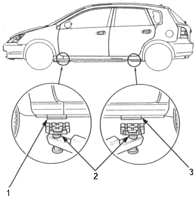
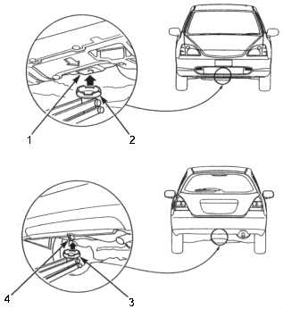

NOTE: If you are going to remove heavy components such as suspension or the fuel tank from the rear of the vehicle, first support the front of the vehicle with a tall safety stands. When substantial weight is removed from the rear of the vehicle, the centre of gravity can change and cause the vehicle to tip forward on the hoist.
Frame Hoist
Position the hoist lift blocks, or safety stands, under the vehicle's front support points and rear support points.

- FRONT SUPPORT POINT
- HOIST LIFT BLOCKS
- REAR SUPPORT POINT
- Raise the hoist a few inches, and rock the vehicle gently to be sure it is firmly supported.
- Raise the hoist to full height, and inspect the lift points for solid contact with the lift blocks.
Safety Stands
To support the vehicle on safety stands, use the same support points as for a frame hoist. Always use safety stands when working on a under vehicle that is supported only by a jack.
Floor Jack
- Set the parking brake.
- Block the wheels that are not being lifted.
- When lifting the rear of the vehicle, put the gearshift lever in reverse (or automatic transmission in Park position).
- Position the floor jack under the front jacking bracket or rear jacking bracket, centre the jacking bracket in the jack lift platform, and jack up the vehicle high enough to fit the safety stands under it.

- FRONT JACKING BRACKET
- JACK LIFT PLATFORM
- JACK LIFT PLATFORM
- REAR JACKING BRACKET
- Position the safety stands under the support points and adjust them so the vehicle will level.
- Lower the vehicle onto the stands.